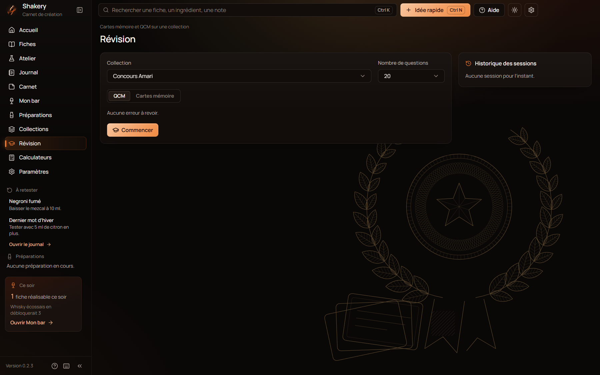

Shakery · refonte ergonomique · planche 08 sur 1024 novembre 2026
Collection ouverte, onglet Réviser
Avant

Ce qui change
- La page Révision devient l’onglet Réviser de la collection ouverte Carte d’hiver, et l’entrée active de la barre latérale est Collections.
- L’en-tête porte un lien retour vers Collections, le titre et la description, et à droite la méta sur une ligne (Type, Fiches, Modifiée) en petites capitales séparées par des filets verticaux, reprise du mode préparation.
- Un sélecteur d’onglets Fiches et Réviser, souligné par le filet cuivre, remplace la rangée de boutons ; Préparer, Exporter en PDF, Partager et le menu des autres actions passent en boutons fantômes dans la même barre.
- Le choix du mode devient deux lignes, Cartes mémoire et QCM, avec une phrase d’explication chacune ; la ligne choisie reprend la sélection de la barre latérale avec un fond dégradé léger et le filet cuivre à gauche.
- Les réglages (nombre de questions, ordre, fiches à revoir d’abord) sont des rangées avec le libellé à gauche et le contrôle à droite, séparées par des filets et sans carte.
- Commencer la révision est le seul bouton plein, suivi d’une phrase qui annonce la série (20 questions tirées des 5 fiches).
- La colonne calme de droite regroupe les dernières sessions, avec le score en cuivre et en chiffres tabulaires, et les fiches à revoir, à la place de la carte Historique des sessions.
- Le menu de choix de la collection disparaît puisque la révision se lance depuis la collection elle-même.
- Le dessin de fond devient celui des Collections, atténué, puisque la page appartient désormais à cette rubrique.
À trancher
- Les réglages « Ordre des questions » et « Commencer par les fiches à revoir » sont des propositions. Les veux-tu dans l’appli, ou seulement le nombre de questions comme aujourd’hui ?
- Préparer, Exporter en PDF et Partager doivent-ils rester visibles sur les deux onglets, ou seulement sur l’onglet Fiches ?
- Une fois lancée, la révision s’ouvre-t-elle en plein écran comme le mode préparation, ou reste-t-elle dans la page ?